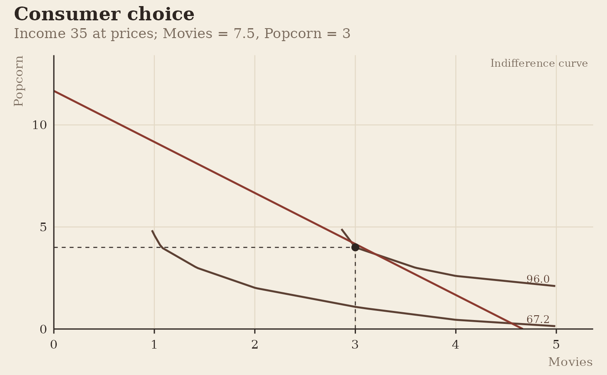

The introductory-course setup: a table of total utility from 1, 2, 3, ...
units of each good, with utility additive across goods. Rationality then
means choosing the affordable whole-unit bundle with the highest total
utility – the rule "spend each dollar where it buys the most utility" –
and optimal_bundle() does exactly that search. indifference_curve()
interpolates the table so the curves can be drawn; mu_per_dollar() lays
out the purchase order the textbook argument walks through.
Usage
utility_table(tu_x, tu_y, goods = c("x", "y"))Arguments
- tu_x, tu_y
Total utility from 1, 2, ..., n units of each good. Utility from zero units is zero. Need not be concave, but the marginal-utility-per-dollar rule only reproduces the optimum when it is.
- goods
Names for the two goods, used in
mu_per_dollar()output.
Value
A function of x and y of class utility_table, evaluating
total utility at any (interpolated) quantities, with the tables and
ranges as attributes.
Examples
u <- utility_table(tu_x = c(20, 37, 50, 60, 65), # movies
tu_y = c(16, 30, 40, 46, 48), # bags of popcorn
goods = c("movies", "popcorn"))
u
#> <Utility table: movies (up to 5) and popcorn (up to 5), additive>
#> units movies popcorn
#> 1 20 16
#> 2 37 30
#> 3 50 40
#> 4 60 46
#> 5 65 48
u(3, 4)
#> [1] 96
b <- budget(income = 35, px = 7.5, py = 3)
optimal_bundle(u, b) # 3 movies, 4 bags
#> x y utility
#> 1 3 4 96
mu_per_dollar(u, b) # the purchase order
#> good unit price mu mu_per_dollar cumulative_cost affordable
#> 1 popcorn 1 3.0 16 5.3333333 3.0 TRUE
#> 2 popcorn 2 3.0 14 4.6666667 6.0 TRUE
#> 3 popcorn 3 3.0 10 3.3333333 9.0 TRUE
#> 4 movies 1 7.5 20 2.6666667 16.5 TRUE
#> 5 movies 2 7.5 17 2.2666667 24.0 TRUE
#> 6 popcorn 4 3.0 6 2.0000000 27.0 TRUE
#> 7 movies 3 7.5 13 1.7333333 34.5 TRUE
#> 8 movies 4 7.5 10 1.3333333 42.0 FALSE
#> 9 movies 5 7.5 5 0.6666667 49.5 FALSE
#> 10 popcorn 5 3.0 2 0.6666667 52.5 FALSE
plot_consumer_choice(u, b, goods = c("Movies", "Popcorn"))
